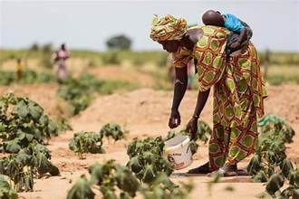

L'insécurité alimentaire au Sénégal : comprendre pour agir
Une analyse géographique et socioéconomique des dynamiques de la pauvreté et de l'accès à l'alimentation à travers les régions sénégalaises.
Qu'est-ce que l'insécurité alimentaire ?
L'insécurité alimentaire désigne la situation dans laquelle des personnes n'ont pas accès de manière fiable à une quantité suffisante d'aliments abordables et nutritifs. Elle touche des millions de Sénégalais, en particulier dans les zones rurales et périurbaines, et se manifeste sous différentes formes : faim chronique, malnutrition et dépendance alimentaire saisonnière.
Au Sénégal, cette réalité est étroitement liée à la variabilité climatique, à la fragilité des systèmes de production agricole, aux inégalités d'accès aux marchés et aux services de base. Les ménages ruraux sont les plus exposés, souvent confrontés à des périodes de soudure alimentaire entre deux saisons agricoles.
La pauvreté joue un rôle déterminant : elle limite les capacités d'achat, réduit la diversité alimentaire et aggrave les déficits nutritionnels, notamment chez les enfants de moins de cinq ans. Selon les enquêtes nationales, plus de 37 % de la population vit en dessous du seuil de pauvreté, avec des disparités marquées entre les régions.
Comprendre la distribution géographique de ces vulnérabilités est essentiel pour orienter les politiques publiques et les interventions humanitaires vers les zones prioritaires. La cartographie présentée dans cet atlas s'inscrit dans cette démarche.

Un enfant sénégalais dans une zone de vulnérabilité alimentaire.
Source : terrain, 2026.
Sources : ANSD (2023), PAM, UNICEF Sénégal, FAO West Africa. Carte réalisée avec QGIS / qgis2web.